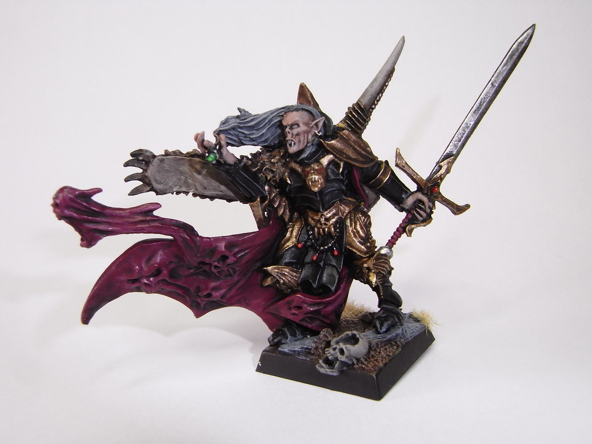

Vampire Counts

The Vampire Counts are amongst the most legendary factions of Vampires to have ever terrorised the civilised lands of the Old World, all of whom are members of the unholy Von Carstein bloodline. From the Imperial government and the patriotic citizenry of the Empire, the Vampire Counts are considered by many to be fiends without equal. They seek only to topple the civilisations of the living and supplant them with an Undead Empire that will reign forever as Lords of the Night.
Select a unit type below for more information about their in-game stats and background!
Unit Stats:
Famous Vampire Counts Lords:
Vlad Von Carstein
Vlad von Carstein, known in his former life as Vashanesh of Nehekhara, was the first Vampire Count of Sylvania, and the founder of the Von Carstein bloodline. He was dreaded by many as the monster that brought darkness upon the lands of Sylvania after his marriage to Isabella von Drak, daughter of the late Imperial Count Otto von Drak. His bid for power, and the desire to rule the whole Empire as his own has ensured the total collapse of the Imperial province, as well as to herald the beginning of the first of the Vampire Wars from 2010 IC and onwards.
Zacharias The Everliving
Little is known of the life of Zacharias before he succumbed to the lure of the necromantic arts. He studied under the tutelage of Dieter Helsnicht, the infamous Doom Lord of the Undead, a Necromancer expelled from Middenheim who now launched attacks on that city from a fortress in the Forest of Shadows. Whilst Helsnicht busied himself with tactics and raising armies, Zacharias took note of his surroundings. He saw they were not the first to work powerful necromancy in the forest. He saw strange flows in the Winds of Magic, which led him all the way to the tower of the Necrarch Lord, Melkhior the Ancient.
Unit Stats:

Examples:
Skeleton Warriors
Beneath the mud lie the grave-stained bones of bitter, ancient warriors. Long held beneath the earth, they are clad in their corroded armour, their lifeless hands still gripping the swords, axes, spears and shields they held in life. Provided their remains have not been blessed by the rites of Morr, a Necromancer or Vampire can use the coiling energies of Dark Magic to instill a semblance of life and a flicker of spirit into these dormant warriors. As the regiments of past massacres claw their way to the surface, their empty eye sockets glow with unholy power. Silently, they gather together in a semblance of their old ranks, mutely awaiting the commands of their new lord as the remains of their tattered banners flap in the unnatural breeze of their creation. Lipless horn blowers raise their instruments and sound a spectral, mournful dirge.
Zombies
Zombies are shambling horrors that stagger towards the enemy battle lines in a noisome horde. Grotesquely reanimated corpses, they are compelled by the Dark Magic of a Vampire or Necromancer, and driven by the will of their master to commit acts of extreme violence. To call the way a Zombie attacks "fighting", is perhaps to give the foul creature credit beyond its due. These sickening half-things have no skill to speak of, but are instead driven only by the insatiable urge to rend, kill and consume the living. Any warrior unfortunate enough to be pulled down by a Zombie horde will find himself torn slowly apart by a mass of desperate clawing fingers, his flesh gouged from his body in grisly, glistening chunks. The fortunate die quickly, but those unlucky souls who are trampled beneath the horde spend their death throes in miserable agony as their innards become a crimson feast.
Unit Stats:
Examples:
Dire Wolves
Dire Wolves are macabre parodies of the living Giant Wolves that roam the Badlands and the forests of the Old World. Their flesh hangs in tatters from cracking bones, their skulls and innards exposed through tears in their skin. They are swathed in an eerie, glimmering twilight and their eyes glow with unnatural energy. The stench of putrefaction hangs on their wet breath and their howls cause shivers of fear to freeze the bold. When they are slain, their bodies dissolve into a coiling miasma, leaving nothing behind. Vampires sometimes keep the largest of these creatures in pens deep below their castles and towers, feeding them on local peasants until they are large and glutted, then goading them to new heights of viciousness. The Vampire imbue their creations with Dark Magic to increase vitality and bestow a callous cunning. These monstrous creations are known as Doom Wolves, and it is these larger, more ferocious beasts that lead the Dire Wolf packs to war.
Grave Guard
The process of creating a Wight allows them to fight the enemies of the Necromancer that raised them with the skills and tools of their former life. On other occasions, Wights are often arisen by their own means when the place of their rest, such as a tomb or mound was desecrated by outside intruders, forcing the deceased spirit to be sucked into his former body by the Dark Magic that permeates from such an evil place
Unit Stats:
Examples:
Black Coach
The Black Coaches are funerary carriages from the underworlds. Within these arcane carriages any tangible remains are gathered in a casket that offers a safe haven in which the banished entity can reform. The dormant occupant can feed upon the energies of death, drinking in agony and grief in order to grow strong. On first tasting death, the Black Coach speeds forward before shimmering jets of balefire extend from the wheels, acting like scythes to cut down enemies. When the coach is immersed in sufficient energies it flickers, allowing it to disappear and reappear in more advantageous positions. Onwards it rolls, growing ever more powerful until it becomes a nigh-unstoppable force of death.
Banshees
Tomb Banshees, known by the Bretonnians as Wailing Hags and to the Dwarfs as the Freezing Shriek, or just simply Banshees, are the bitter, restless spirits of long-dead sorceresses, enchantresses and witches that have in life plagued the lands of the Old World for centuries. They fear crossing the void to face whatever punishment awaits them for their evil deeds, and so it is an easy matter for a Vampire to bind them to his service.
Game Book
Each army requires a gamebook to play the stats listed above are just an example of what you will find in each army book! they contatin info and stats to help you field your army as well as fun history and infromation about your selected faction.